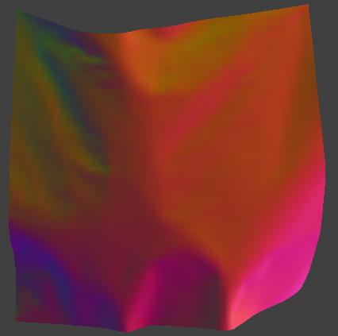
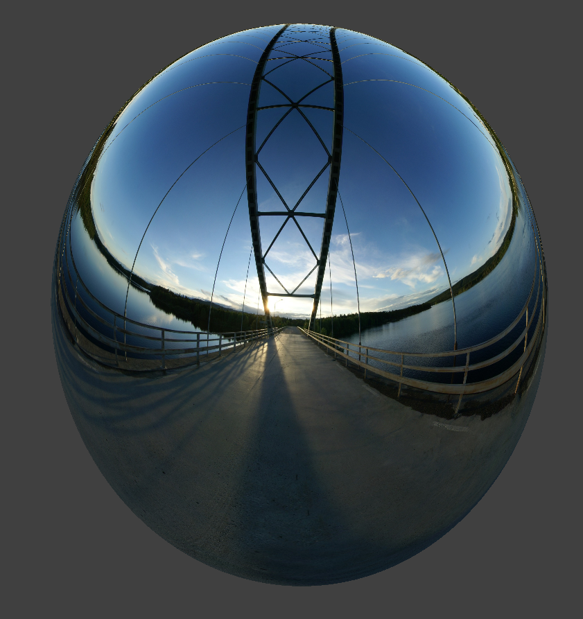

Project 4: Cloth Simulator
CS 184: Computer Graphics and Imaging, Spring 2023
Overview
In this project, we implemented real-time simulation of cloth using the mass-spring system taught in lecture. We also write shaders to create interesting materials on the simulated cloth. The result was satisfying, seeing the cloth come to life.
Part 1: Part I: Masses and springs
In this part, we will build a mass-sprig system to model deformable objects. Specifically, given a sheet of cloth with some desired dimensions and parameters, we will divide it into evenly spaced grids of point masses, and connect nearby masses with different types of springs.
To implement this, in Cloth::buildGrid, we first find the appropriate steps for each row and column based on width, height, num_width_points and num_height_points, and iterate through the nested for loop to populate point_masses.
We then iterate through the nested for loop again to populate springs. Specifically, we add three types of springs listed below:
we add structural constraints to a point mass and the point mass to its left as well as the point mass above it.
we add shearing constraints to a point mass and the point mass to its diagonal upper left as well as the point mass to its diagonal upper right.
we add bending constraints to a point mass and the point mass two away to its left as well as the point mass two above it.
Below are some screenshots of scene/pinned2.json from different viewing angles where we can clearly see the cloth wireframe to show the structure of the point masses and springs.
Below we show what the wireframe looks like (1) without any shearing constraints, (2) with only shearing constraints, and (3) with all constraints.
Part 2: Simulation via numerical integration
After implementing the system of masses and springs, we need to apply forces on our cloth’s point messes so that we can see how they move as time progresses.
There are two types of forces we need to apply to each point mass: external forces based on external_acceleration and the mass, and spring correction forces.
For external forces, we will the formula F = m * a(Newton’s 2nd Law) and apply it to each point mass. For spring correction forces, we use Hooke’s law:
and apply this force to one point mass and the opposite force to the other point mass.
After we have the force acting on each point mass at this time step, we need to compute each point mass’s new position. We used the Verlet integration algorithm in this case based on the formula below to update the new position:
Eventually, we add constrains on the position updates so that we won’t get an unreasonably deformed cloth. More specially, for each spring if a spring’s length is more than 10% grater than its rest_length, then we will correct the two end points of the spring so that it will be exactly 10% greater than its rest_length. The way to correct differs based on whether the two end points are pinned or not.
Now we compare how the parameter spring constant ks affects the final results. Below are the final resting views of scene/pinned2.json with different values for the spring constant ks:

When the spring constant ks is very low, the cloth looks very loose and tends to deform due to its weight. When the spring constant ks is very high, the cloth looks very stiff, and that’s less prone to deform due to its weight.
Now we compare how the density parameter affects the final results. Below are the final resting views of scene/pinned2.json with different values for the parameter density:
When the density is low, it looks like the cloth is really light and could be blown away easily. As the density increases, we can see the weight of the cloth starts to increase, which can be demonstrated by the folds on the cloth.
Now we compare how the damping parameter affects the final results. Below are the final resting views of scene/pinned2.json with different values for the parameter damping:

The damping parameter doesn’t affect the final results but will affect how the cloth comes to its resting position. When damping is low, the cloth is prone to oscillate more before coming to its resting position and creates more ripples. When the damping parameter is high, it’s less prone to continue oscillating.
Below is the final result of scene/pinned4.json in its final resting state!
Part 3: Handling collisions with other objects
Now we want to see how the cloth interacts with a sphere and a plane when it collides with them.
In Sphere::collide, we will adjust a point mass’s position if it intersects with or is inside the sphere by “bumping” it up to the surface of the sphere. Specifically, we compute the tangent point by connecting the origin of the sphere and the point mass’s position, which is used to find the correction vector and apply it to the last_position. Then we get the new position by applying the correction vector to the last_position and scaling down by (1-f) where f is friction.
In Plane::collide, if a point mass moves from one side of the plane to the other in the last time step, we “bump” it back to the side where it’s coming from.
Then in Cloth::simulate, we add a for loop to iterate through every point mass and check call collide on every possible CollisionObject on that point mass.
Below are some screenshots of the shaded cloth from scene/sphere.json in its final resting state on the sphere using the default ks = 5000 as well as with ks = 500 and ks = 50000.
As mentioned in part 2, ks represent the stiffness of the cloth. As we can see, when the ks is low, the cloth drapes around the sphere. When the ks is high, the cloth remains more of its own shape and looks more rigid compared to the one with low ks parameter.
Below is the shaded cloth from scene/plane.json in its final resting state on the plane.
Part 4: Handling self-collisions
Below we provide a sequence of images demonstrating the cloth falling down, colliding with itself, and coming to a resting state.
Increasing the density caused the cloth to fall directly down on top of itself to a greater extent. This can be seen in the image below, with the cloth in a resting state that is less spread out than the last when the density value is set to 100. By constrast, with lower density, the cloth becomes less stable and moves more dramatically when making contact with itself. At very low density, it becomes completely unstable and moves as if it was struck by wind. The image below shows it moving in a less predictable way at density value of 4.
When playing with the ks value, we observe that at lower values, more folds form in the cloth, while at higher values, there are less folds and we observe only gentle folding.
ks at 10,000ks at 20Part 5: Shaders
Shaders are programs ran on the GPU with the purpose of modifying vertices or pixels in a renderered image. In this case, we are rendering with OpenGL so use the shading language GLSL (OpenGL Shading Language). It provides high level access to the graphics pipeline. We write two types of shaders in this project – fragment shaders and vertex shaders. The former operates on pixels while the latter on the vertices of the scene. The results of the vertex shader are further processed by the graphics pipeline, then passed to the fragment shader, which colors the pixels. We utilize both of these to efficiently render interesting materials on the GPU.
Blinn-Phong Shader
The Blinn-Phone shading model provides us with a means of realistically simulating the appearance of lighting on surfaces. It works by dividing the light effects into three categories–ambience, diffuse, and specular.
- Ambient lighting represents the light that exists uniformly throughout the scene. It shoots in all directions and has the same effect on all surfaces. It can be thought of informally as the minimum light existing in the scene. We calculate it by multiplying the light intensity (a value of our choosing) by the ambient light color. The latter value is just white in our case.
- Diffuse lighting represents the light scattered uniformly in all directions by surfaces. The amount of light reflected is dependent on the angle between the surface’s normal and light direction (which are inversely related).
- Specular lighting represents highlights (the shine) on a surface and improves the realism of the image significantly. It is dependent on the halfway vector and the view direction. The amount of shininess is controlled via the specular component (\(p\) in the assignment specification). We settled on 100 for this value.

Texture Mapping Shader
Below is a demonstration of the texture shader using a forged iron metal texture (source).
Bump and Displacement Mapping Shaders
Below we demonstrate the bump and displacement mapping shaders using a custom wood texture (source). We see that the displacement mapping shader attempts to give a 3D effect to the wood, though its success is moderate at best, with the shapes created being too sharp and jagged to plausibly be wood bark. This makes sense as the approximation in the shaders’ h used is simply the R value (as in RGB) from the texture. It was necessary to fiddle with the Height and Normal parameters in the GUI to create an acceptable image. That is, given acceptable parameters for the bump mapping, a direct conversion to displacement mapping produced 3D effects far too exaggerated.
Below we modify the sphere’s coarseness and compare. The bump mapping has parameters (Normal: 120, Height: 0.02) and the displacement mapping has parameters (Normal: 120, Height 0.01) – see above for why they differ.
-o 128 -a 128-o 128 -a 128-o 16 -a 16-o 16 -a 16We can see that the size of the 3D effects become much larger when the coarseness of the sphere increases, though the effect is perhaps subtle. Increasing the height parameter to 0.05 for the displacement mapping rendering makes it obvious to the point of looking absurd:
-o 16 -a 16 and Height at 0.05Mirror Shader
Below we share the results of the mirror shader applied to the sphere and cloth.

Collaboration
We collaborated remotely. It was difficult as one member had a severe concussion.